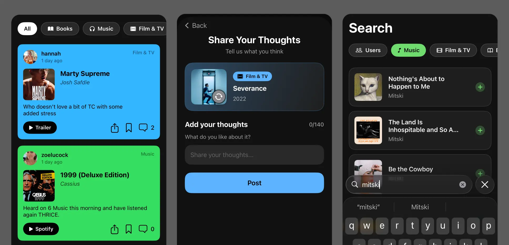
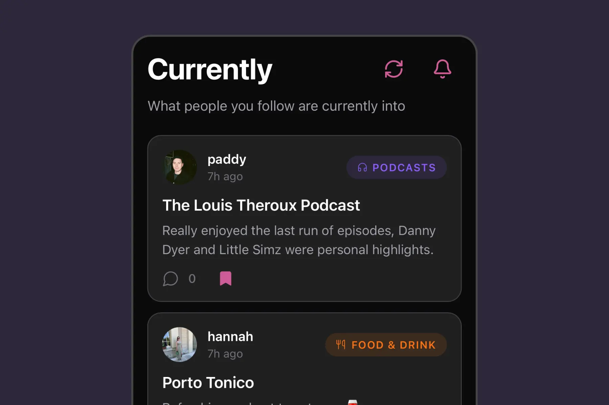
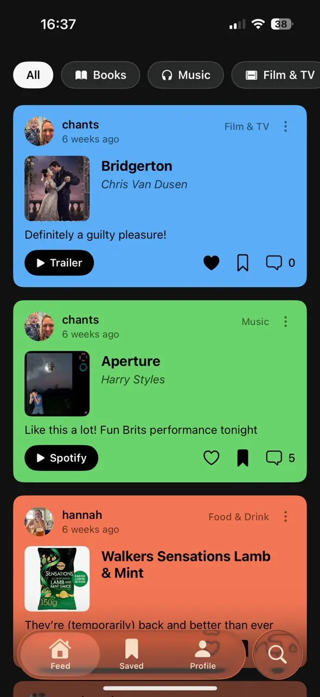
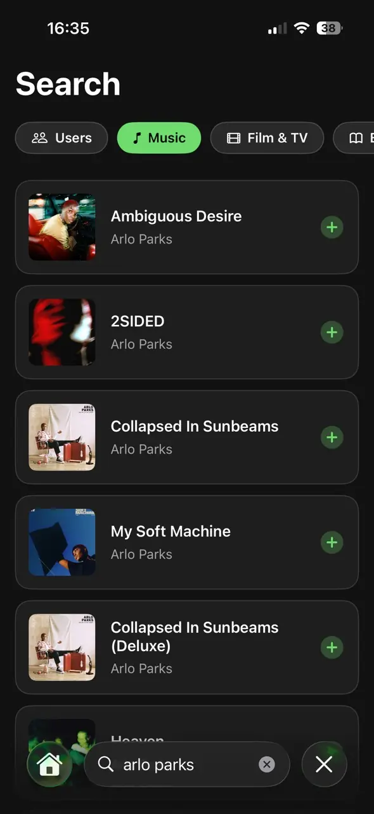
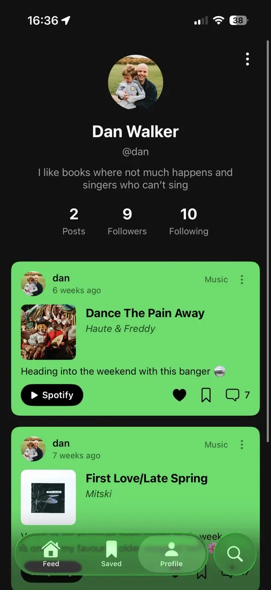

Designing a social platform that pushes you toward new books, music, and films — and gets out of your way when you've seen everything new.
Try on TestFlight
Most social media isn't designed to be good for you. It's designed to keep you on it. Infinite scroll, algorithmic feeds, notification loops, like counts. Every one of these is an intentional mechanism to maximise time-on-app. The KPI isn't whether you enjoyed it. It's whether you came back.
I find that genuinely frustrating. I've thought a lot about what the alternative looks like. Not a social app with a wellness disclaimer, but one built from different first principles entirely. Where success looks like someone closing the app because they've found a new album and want to go listen to it.
I grew up on MySpace. One of the things I remember most was landing on a friend's profile and finding a song playing that I'd never heard before. Then spending an hour going down a rabbit hole of music I never would have found otherwise. It felt like genuine discovery, mediated by someone whose taste I trusted.
That kind of serendipity has been almost completely engineered out of social media. Algorithms serve you things you'll probably like. That sounds fine, but it collapses the edges. You stop encountering things that surprise you. The feed becomes a mirror, not a window.
"What if the app's success metric was books finished and albums discovered. Not sessions per day."
Currently is my attempt to build something in that spirit. A social app where you share what you're enjoying right now: the book you're reading, the album you can't stop playing, the film you watched last night, the restaurant you keep recommending. The point is to push each other toward new things, not to accumulate attention.
Currently lets you share what you're into across six content types: books, music, films, TV shows, restaurants, and bars. You search external APIs to find the exact thing you're enjoying, then add your own take. It's closer to Letterboxd or Goodreads than Instagram. Structured around content rather than moments, with real metadata and cover art pulled from source.
The social layer is built around taste rather than follower counts. You follow people with interesting shelves, discover users through shared obsessions, and browse a feed of what people in your network are genuinely into right now. Not what they posted three weeks ago.
When you've seen everything new in your feed, that's it. No infinite scroll. The app has a natural stopping point built in.
No algorithm. No promoted content. The feed shows what's most recent from people you follow, full stop.
You can only be reading one book at a time. Updating your current read replaces the old one. The profile stays honest.
Reactions exist but counts aren't public. The point is sharing taste, not optimising for engagement.

Early concept, before API integrations
The earliest prototypes had no API integrations. Users had to enter everything manually: the title, the artist or author, a description, their own artwork. It felt fine in isolation, but feedback from testing was consistent. People found it cumbersome. By the time you'd typed everything in, the moment had passed. The thing you wanted to share felt like homework.
"If sharing takes longer than the impulse lasts, you've already lost. People don't post. They mean to post, and then they don't."
The fix was to build the product around external APIs. Now you search Spotify and the album appears in under a second, cover art and all. Google Books surfaces the exact edition you're reading. TMDB has the film poster, the runtime, the cast. Yelp gives you the restaurant photo and the neighbourhood. The user contributes one thing: their take on it. Everything else is already there.
That shift changed the posting experience from a form-filling exercise into something closer to a recommendation. You find the thing, you add a line about why you love it, and you're done. The richness that makes posts feel worth reading comes from the API, not from the user's effort.
The posting flow is the heart of the product. You pick a category, search the relevant API, select the item, and add your take. A sentence or two about why you're enjoying it, what made you start it, who you'd recommend it to. The API handles cover art, metadata, and ratings. The post feels rich without requiring any effort.
I prototyped this heavily in Figma, testing with friends over several weeks. The key tension was between richness and friction. Surfacing enough context without making posting feel like filling out a form. The composer went through several iterations. The API search needed to feel instant. The take field needed to feel optional enough that people would actually use it.
Profiles are designed to feel like shelves: a visual grid of what someone is currently into, organised by category. You can see at a glance whether someone's taste aligns with yours, and follow based on that rather than on social obligation.

Social feed — chronological, no algorithm

Content search and post composer

Profile — a shelf of what you're into
The hardest product question with Currently isn't the design. It's the cold start problem. A social app lives or dies on network effects, and a feed full of people you don't follow is just noise. The answer I keep coming back to is using the content as the connective tissue. A post about a Haruki Murakami novel shouldn't just reach your followers. It should surface communities reading the same thing and show you whose taste overlaps with yours.
That's a fundamentally different model from follow-first social. Instead of building a graph of people and hoping the content follows, you let shared content build the graph. Search or post something, and the app uses that signal to pull you toward people and communities you wouldn't have found otherwise.
The bigger question is whether the constraints hold under pressure. Finite scroll feels right in principle. But it's genuinely hard to design for the moment when someone has seen everything new and the app has nothing left to show them. The honest answer might be: that's fine. Close the app. Go read the book someone just posted about.